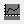

Dunkelmodus der GUI umschalten
Dunkelmodus des Fenstertyps allgemein umschalten
Dunkelmodus für aktuelles Fenster umschalten
Automatische Farbe für Dunkelmodus von Diagrammen
Sparklines im aktiven Blatt für Dunkelmodus aktualisieren
Die Schaltflächen der Symbolleiste Dunkelmodus bieten schnellen Zugriff auf die Steuerung des Dunkelmodus.
|
GUI umschalten
Dunkelmodus der GUI umschalten |
|
|
Dunkelmodus nach Fenstertyp
Dunkelmodus des Fenstertyps allgemein umschalten |
|
|
Aktuelles Fenster
Dunkelmodus für aktuelles Fenster umschalten |
|
|  |
Hintergrundfarbe
Automatische Farbe für Dunkelmodus von Diagrammen |
|
Sparklines aktualisieren
Sparklines im aktiven Blatt für Dunkelmodus aktualisieren |